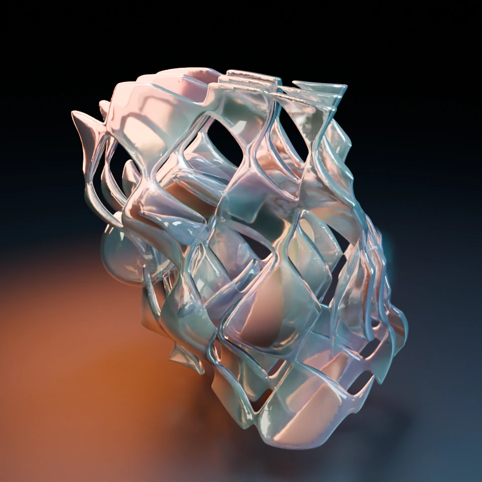
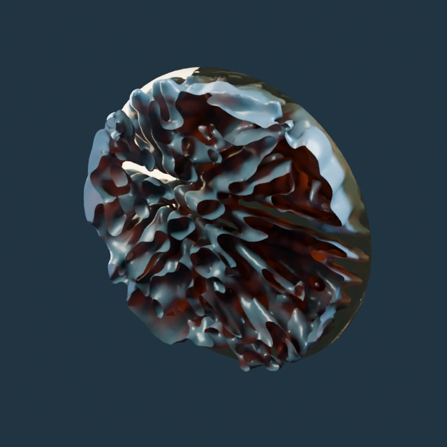
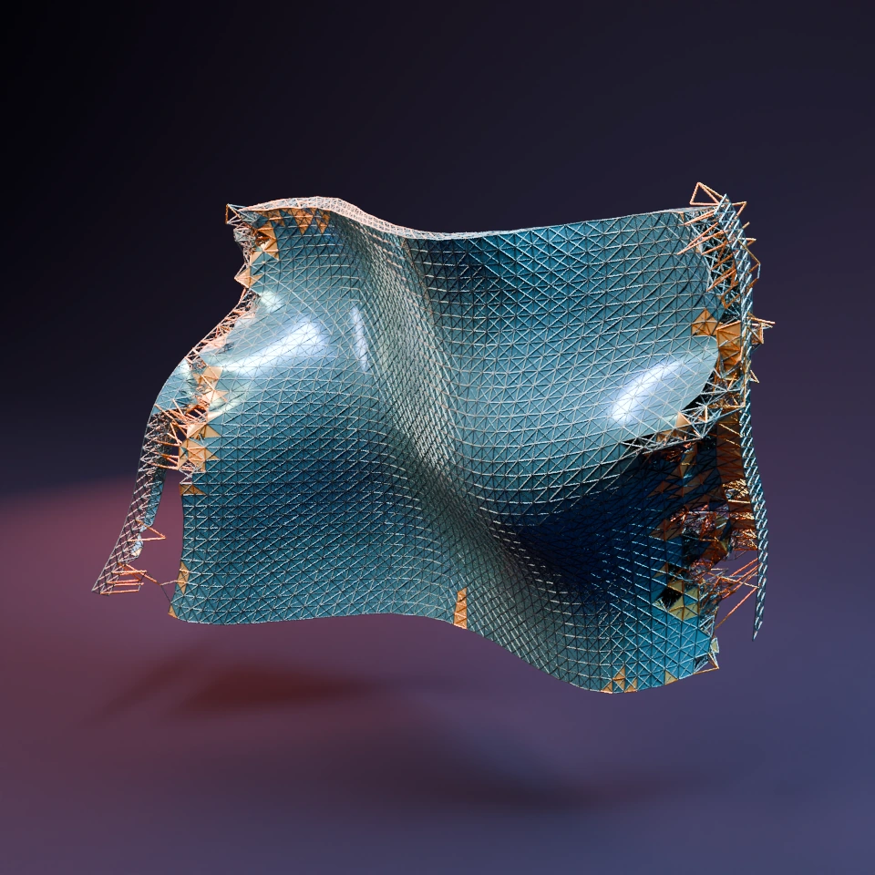

Open an interior
Rotate, section and compare recorded Julia states.

The chamber the brine kept
Explore the porous mineral made by reacting brine. Cut into its computed passages and remaining chemistry.
Enter the brine chamber ↗
The light takes the long way
A growing mineral bends light through three apertures. Compare the paths across five saved states.
Follow the light ↗
What the bell kept
Peel back resonant shells, where recurrent activity and pressure leave a shared material history.
Cut through the shells ↗Watch matter change

The nacre fault
Pressure crosses a mineral that retunes the next wave.
Watch 65 recorded states ↗
Where the note goes
Three wave packets write, erode and encounter their own traces.
Watch 40 recorded states ↗
The second seam
A sheet tears; finite repair stock makes new connections.
Watch loading and repair ↗What does a history make possible?
Explore recorded experiments in memory, action and living construction. The controls select measured histories and comparisons.
Build for what arrives next
Two resource histories meet at the same present. Change the history a paid controller reads and see what it learns to build.
Compare the learned allocations ↗ Cells → materialAfter the feed
Follow a moving, bonded patch through 33 captures. Inspect cells, catalyst and stored food after the finite feed ends.
Explore the living scaffold ↗What can this matter remember?
Explore how recurrent feedback and slow adaptation change a cell controller’s response to its input history. Each tile contains measured responses from eight inherited controllers under the same pair of independently generated signals.
Choose a dynamical regime
Rows: adaptation strength 0, 0.3, 0.9. Tile score: median held-out R². One means perfect prediction; zero is the held-out mean baseline. Negative values remain visible.
Memory over increasing delays
Pale lines: individual controllers. Gold: their median. Dashed: direct-current-input control. Sampling interval: model time.
These are recorded experiments with the native Julia controller kernels. The readout learns to decode state; the cells are not trained to solve these tasks. Physiology and neighbors are clamped. A readable memory is a capability to investigate in the coupled material—not proof that a cell uses it.
Experiment and interpretation
Independent training and test signals; training-only feature normalization; fixed ridge penalty; no test-set fitting. Features are hidden state and slow adaptation. Identical-input twins begin with a small hidden-state difference. Sustained twin separation may reflect different attractors or sensitivity; it is not by itself a Lyapunov exponent or evidence of criticality.
The matrix changes recurrent-to-hidden weights and adaptation strength. Sensory weights, founder identities, response time, adaptation time, and the existing hidden plasticity law remain matched. Every condition keeps its full score vector. This view selects recordings and does not run Julia in the browser.
Download measured results · Half-step comparison · Methods and limitations